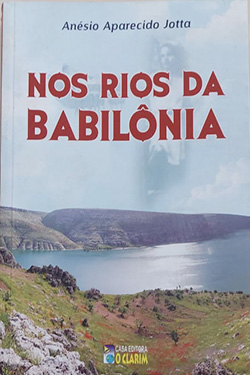

Nos rios da Babilônia - Anésio Aparecido Jotta
Sobre o livro:
Os espíritos André Luiz e Emmanuel esclarecem questões e pontos importantes anotados nas obras de Allan Kardec. Sua leitura é um convite à meditação em torno dos valores morais e espirituais consagrados pelo Espiritismo.
Imagens:
Onde Encontrar?
Estante 01, Prateleira 04, Seção J
Código do Livro
3213
Outras informações:
- Número de páginas: 403;
- Anésio Aparecido Jotta;
- Editora:O Clarim